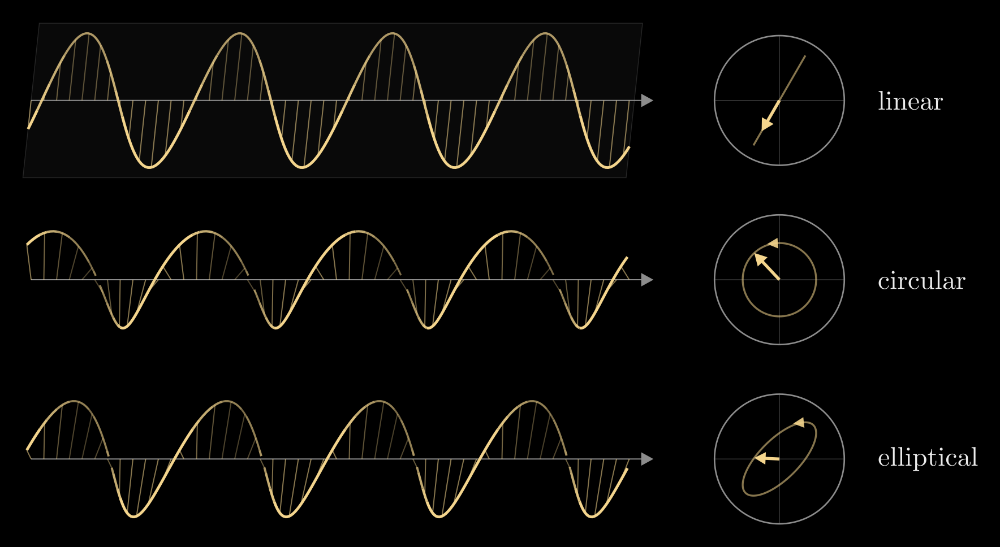
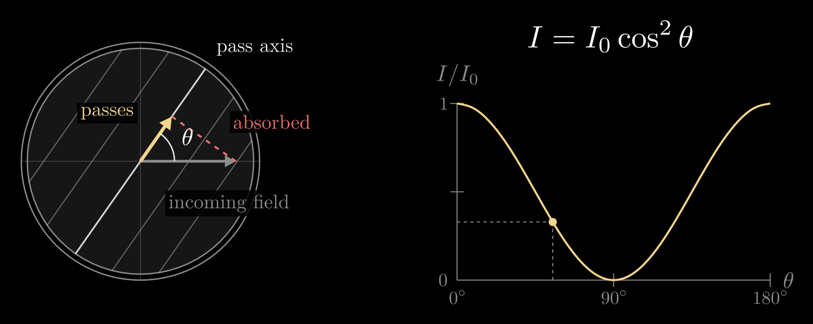
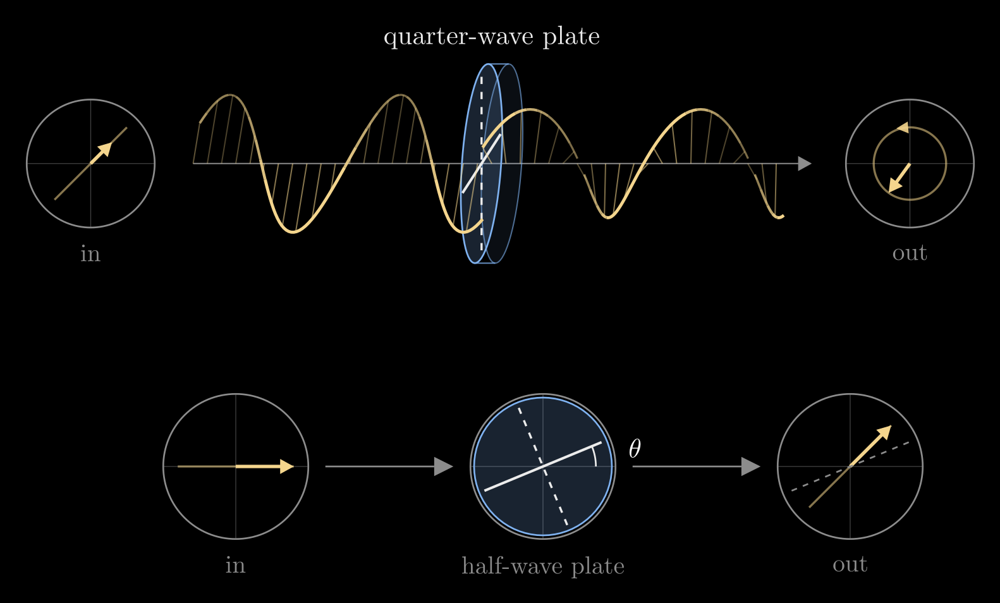
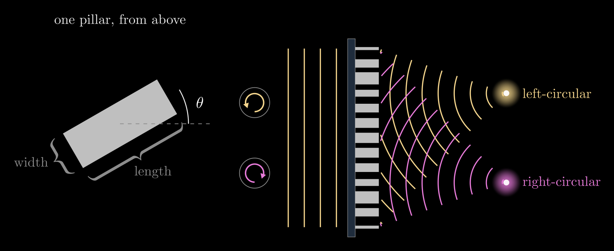

Polarization and Jones Calculus
Polarization is the direction in which the electric field of a light wave oscillates. Light is a transverse wave: its field swings across the direction of travel, never along it, and the polarization is the shape the tip of the field traces in that cross-section, a straight line, a circle or an ellipse. Our eyes barely notice it, yet polarized sunglasses, LCD screens, 3D cinema glasses and the polarizing filters on cameras all work by sorting light by its polarization. This note describes polarized light with Jones vectors, shows how polarizers and wave plates act on them as 2×2 Jones matrices, and ends with metasurfaces, flat sheets that put a different tiny wave plate at every point.
Video: Polarization: How Light Wiggles, a four-minute visual explainer of the first half of this note, from Jones vectors to Malus's law.
The field of a light wave
Take a light wave of wavelength \(\lambda\) traveling along \(z\). Its electric field lies in the \(x\)-\(y\) plane. Throughout this note the field is described as seen by an observer who looks toward the source, with the light coming toward them: \(x\) points to their right and \(y\) up. A wave of a single wavelength is written with complex amplitudes,
\[\mathbf{E}(z,t) = \operatorname{Re}\left[\begin{pmatrix} E_x \\ E_y \end{pmatrix} e^{i(kz-\omega t)}\right]\]
where \(\operatorname{Re}\) takes the real part, \(k = 2\pi/\lambda\) is the wavenumber and \(\omega\) the angular frequency. The complex numbers \(E_x\) and \(E_y\) hold the size and the phase of each oscillation: \(|E_x|\) is how far the field swings horizontally and \(\arg E_x\) its phase, and likewise for the vertical swing. At \(z = 0\) the two components are plain oscillations,
\[E_x(t) = |E_x|\cos(\omega t - \arg E_x), \qquad E_y(t) = |E_y|\cos(\omega t - \arg E_y)\]
so the polarization is decided by how the two combine: their sizes and the delay between them. The magnetic field is perpendicular to both the electric field and the direction of travel, so it carries no extra information, and by convention polarization refers to the electric field.
Jones vectors
Only the two sizes and the delay matter for the polarization, so the complex amplitudes are collected into the Jones vector
\[\mathbf{E} = \begin{pmatrix} E_x \\ E_y \end{pmatrix} = \begin{pmatrix} |E_x| \\ |E_y|\, e^{i\delta} \end{pmatrix}\]
where \(\delta = \arg E_y - \arg E_x\) is the phase delay of the vertical oscillation behind the horizontal one: \(E_y(t)\) reaches its peak a time \(\delta/\omega\) after \(E_x(t)\) does. A phase shared by both entries only shifts the whole wave in time, so it is dropped and the first entry is made real. The intensity is proportional to \(|E_x|^2 + |E_y|^2\), and Jones vectors are usually normalized so that this sum is 1.
The delay decides the shape:
- \(\delta = 0\) or \(\delta = \pi\): the two components rise and fall together, or exactly opposite, so the field stays on a straight line. This is linear polarization, at the angle \(\alpha\) from horizontal with \(\tan\alpha = \pm|E_y|/|E_x|\).
- \(|E_x| = |E_y|\) and \(\delta = \pm\pi/2\): each component peaks while the other passes through zero, and the tip runs around a circle. This is circular polarization.
- Anything else: the tip traces an ellipse. Elliptical polarization is the general case, with lines and circles as its limits.

Figure 1. Linear (here at 60° from horizontal), circular and elliptical polarization. Left: the field along the beam at one instant, the light traveling to the right. Up is up and the sideways direction points into the page, and parts of the field that point into the page are drawn dimmer. Right: the same light seen head-on as it comes toward you. The arrow is the field at that instant, and the curve is the path its tip traces over one cycle, with an arrowhead for the direction it turns.
Common states are written as kets, a shorthand for these normalized column vectors:
- horizontal and vertical: \(|H\rangle = (1, 0)^{\mathsf T}\) and \(|V\rangle = (0, 1)^{\mathsf T}\); linear at the angle \(\alpha\): \((\cos\alpha, \sin\alpha)^{\mathsf T}\)
- diagonal and antidiagonal, at \(\pm 45^\circ\): \(|D\rangle = \tfrac{1}{\sqrt{2}}(1, 1)^{\mathsf T}\) and \(|A\rangle = \tfrac{1}{\sqrt{2}}(1, -1)^{\mathsf T}\)
- right and left circular: \(|R\rangle = \tfrac{1}{\sqrt{2}}(1, -i)^{\mathsf T}\) and \(|L\rangle = \tfrac{1}{\sqrt{2}}(1, i)^{\mathsf T}\)
Handedness is named as seen by the observer receiving the light: \(|L\rangle\) (\(\delta = +\pi/2\)) turns counterclockwise and \(|R\rangle\) (\(\delta = -\pi/2\)) clockwise, and at a frozen instant the field of \(|R\rangle\) traces a right-handed helix in space. This is the traditional optics convention, the one used in Nano-Optical Polarization Control. Engineering texts and the helicity convention of particle physics name the two the other way around, and texts that write the wave as \(e^{i(\omega t - kz)}\) conjugate every Jones vector, so check the convention before comparing formulas from different sources.
Two polarizations are orthogonal when \(E_{1x}^* E_{2x} + E_{1y}^* E_{2y} = 0\), where the star is the complex conjugate and the subscripts 1 and 2 label the two states: \(|H\rangle\) and \(|V\rangle\), \(|D\rangle\) and \(|A\rangle\), \(|R\rangle\) and \(|L\rangle\). Any orthogonal pair is a basis: every polarization is a combination of the two, and light in one state of the pair has no part along the other.
Unpolarized light
Sunlight and the light of bulbs and LEDs are unpolarized. They are a jumble of independent emissions whose field direction changes at random far faster than any detector can follow, so no single Jones vector describes them; unpolarized light behaves as an equal mix of any orthogonal pair with a random delay between the two. Partly polarized light, such as skylight or glare, mixes a polarized and an unpolarized part. The Stokes vector describes all of these, see Stokes Vectors.
Polarizers and Malus's law
A linear polarizer passes the part of the field along its transmission axis and absorbs or reflects the rest. Let the axis make the angle \(\theta\) with the horizontal, and write \(\mathbf{u} = (\cos\theta, \sin\theta)^{\mathsf T}\) for the unit vector along it. The polarizer keeps the projection of the field onto \(\mathbf{u}\), which is \((\mathbf{u}^{\mathsf T}\mathbf{E})\,\mathbf{u}\), so its Jones matrix is
\[P(\theta) = \mathbf{u}\mathbf{u}^{\mathsf T} = \begin{pmatrix} \cos^2\theta & \cos\theta\sin\theta \\ \cos\theta\sin\theta & \sin^2\theta \end{pmatrix}\]
Send in light polarized linearly at the angle \(\alpha\), with intensity \(I_0\). Its field makes the angle \(\theta - \alpha\) with the axis, so the part that passes is \(\cos(\theta - \alpha)\) times as long, and since intensity goes as the square of the field, the transmitted intensity \(I\) is
\[I = I_0 \cos^2(\theta - \alpha)\]
This is Malus's law, and it is what a polarizer does to brightness: aligned with the light (\(\theta = \alpha\)) it passes everything, crossed (\(\theta - \alpha = 90^\circ\)) it passes nothing, and in between the brightness falls smoothly. Unpolarized light averages \(\cos^2\) over all directions, so a polarizer passes half of it, polarized along the axis.

Figure 2. Malus's law. Left: a polarizer seen head-on, its lines along the pass axis at the angle \(\theta\) to the incoming field. The part of the field along the axis passes (yellow), and the part across it is absorbed (red). Right: the transmitted intensity, \(I/I_0 = \cos^2\theta\), with the dot at the angle shown on the left.
A few consequences:
- Crossed polarizers are dark, yet a third polarizer placed between them at \(45^\circ\) lets light through again. Each polarizer keeps the part along its own axis, so the light is turned in two \(45^\circ\) steps and keeps \(\cos^2 45^\circ \cdot \cos^2 45^\circ = 1/4\) of the intensity that left the first polarizer.
- Glare is polarized. Light reflected from water, glass or a road is partly polarized parallel to the surface, and fully so at Brewster's angle \(\theta_B = \arctan(n_2/n_1)\), for light going from a medium of refractive index \(n_1\) into one of index \(n_2\): about \(53^\circ\) from the normal for water (\(n_2 \approx 1.33\) from air). Polarized sunglasses have a vertical transmission axis, so they block most of it.
- An LCD screen sets each pixel's brightness by changing the polarization between two polarizers, so its light leaves linearly polarized. Seen through polarized sunglasses, such a screen dims and can go black as you tilt your head.
Polarizing film, such as the H-sheet in sunglasses, is a stretched polymer stained with iodine. Its aligned chains absorb the field component along them, so its transmission axis runs across the stretch direction. A wire-grid polarizer does the same with fine metal wires: it reflects light polarized along the wires and passes the perpendicular polarization.
Wave plates
A wave plate changes polarization without absorbing light. It is cut from a birefringent material, such as quartz, calcite or a stretched polymer film, whose refractive index depends on the direction of the field. Take a plate of thickness \(d\) whose two axes are horizontal and vertical, with refractive index \(n_x\) for light polarized along the first and \(n_y\) for light polarized along the second. Crossing it, the two components are held back by the phase delays \(\varphi_x = 2\pi n_x d/\lambda\) and \(\varphi_y = 2\pi n_y d/\lambda\). In the convention above, holding a component back by \(\varphi\) multiplies it by \(e^{i\varphi}\), so the plate's Jones matrix is diagonal:
\[J_0 = \begin{pmatrix} e^{i\varphi_x} & 0 \\ 0 & e^{i\varphi_y} \end{pmatrix}\]
The part the two delays share only delays the whole wave. What changes the polarization is their difference, the retardance
\[\Gamma = \varphi_y - \varphi_x = \frac{2\pi}{\lambda}\,(n_y - n_x)\,d\]
which adds directly to the delay \(\delta\) of the Jones vector. The axis with the smaller index is called the fast axis and the other the slow axis.
A plate can be turned to any angle \(\theta\), the angle of its first axis from horizontal. Its Jones matrix then expresses the field along the plate's own axes, delays each part, and expresses the result back along horizontal and vertical:
\[J(\theta) = R(-\theta)\begin{pmatrix} e^{i\varphi_x} & 0 \\ 0 & e^{i\varphi_y} \end{pmatrix} R(\theta), \qquad R(\theta) = \begin{pmatrix} \cos\theta & \sin\theta \\ -\sin\theta & \cos\theta \end{pmatrix}\]
Read it right to left: \(R(\theta)\) gives the field's components along the plate's two axes, the diagonal matrix delays each by its own amount, and \(R(-\theta)\) turns back to horizontal and vertical. This is the Jones matrix of any linear retarder, and the form used for metasurface pillars below.
Two plates do most of the work:
- A quarter-wave plate has \(\Gamma = \pi/2\). Light polarized at \(45^\circ\) to its axes enters with equal components in step and leaves with them a quarter cycle apart, which is circular: with the fast axis horizontal, \(J_0|D\rangle = e^{i\varphi_x}|L\rangle\). Turning the plate by \(90^\circ\) gives \(|R\rangle\) instead, and circular light sent through a quarter-wave plate leaves linear.
- A half-wave plate has \(\Gamma = \pi\), so \(\varphi_y = \varphi_x + \pi\) and its Jones matrix is [J(\theta) = e^{i\varphi_x}\begin{pmatrix} \cos 2\theta & \sin 2\theta \\ \sin 2\theta & -\cos 2\theta \end{pmatrix}]. Light polarized linearly at the angle \(\alpha\) leaves at \(2\theta - \alpha\), mirrored across the plate's first axis, so turning the plate by \(\theta\) turns the polarization by \(2\theta\). A half-wave plate also swaps left- and right-circular light.

Figure 3. Top: a quarter-wave plate with its fast axis horizontal (the solid line, drawn into the page like every sideways direction; the slow axis is dashed) turns light polarized at 45° into circular light. Bottom: seen head-on, a half-wave plate whose fast axis makes the angle \(\theta\) with the horizontal mirrors horizontal light across that axis, turning it by \(2\theta\). Here \(\theta = 22.5^\circ\), so the light leaves at 45°.
Wave plates are thin. A quartz quarter-wave plate for green light (\(\lambda = 550\) nm, \(n_y - n_x \approx 0.009\)) is about 15 μm thick. Since \(\Gamma\) scales as \(1/\lambda\), a plate is exact only at its design wavelength.
Light that passes several elements, \(J_1\) first and \(J_N\) last, leaves as
\[\mathbf{E}_{\text{out}} = J_N \cdots J_2\, J_1\, \mathbf{E}_{\text{in}}\]
with the matrices multiplied right to left in the order the light meets them. That is all of Jones calculus.
Metasurfaces: a wave plate at every point
A metasurface, described in Flat Optics: DOEs and Metasurfaces, is a flat sheet of tiny pillars, each narrower than a wavelength, that sets the phase delay of the light passing each point. A round pillar delays every polarization equally. A rectangular pillar does not: light polarized along its long side is held back more than light polarized along its short side, so a rectangular pillar is a tiny wave plate. Its width and length set the delays \(\varphi_x\) along its long side and \(\varphi_y\) along its short side, its rotation on the substrate sets the angle \(\theta\) of its long side, and its Jones matrix has exactly the wave-plate form \(J(\theta)\) above. Every pillar can differ, so the sheet carries a Jones matrix that changes from point to point, with three knobs at each point: width, length and angle.
This lets one sheet give two polarizations two different phase patterns. The cleanest case uses circular light and pillars that are half-wave plates, whose two delays differ by half a turn, \(\varphi_x - \varphi_y = \pi\). With the half-wave matrix above,
\[J(\theta)\,|L\rangle = e^{i(\varphi_x + 2\theta)}\,|R\rangle, \qquad J(\theta)\,|R\rangle = e^{i(\varphi_x - 2\theta)}\,|L\rangle\]
Each circular polarization leaves with the opposite handedness and its own phase delay: \(\Phi_L = \varphi_x + 2\theta\) for left-circular light and \(\Phi_R = \varphi_x - 2\theta\) for right-circular light. Turning a pillar shifts the two phases in opposite directions (the geometric, or Pancharatnam–Berry, phase), while changing its size shifts both together. So any two target phases at a point fix the pillar:
\[\varphi_x = \frac{\Phi_L + \Phi_R}{2}, \qquad \theta = \frac{\Phi_L - \Phi_R}{4}\]
where the width and length come from a lookup table of half-wave pillars, indexed by \(\varphi_x\). Choosing \(\Phi_L\) and \(\Phi_R\) as two lens phase patterns with different foci gives one flat sheet that focuses left- and right-circular light to two different spots.

Figure 4. Left: a rectangular pillar seen from above, a tiny wave plate whose width and length set its two delays and whose angle \(\theta\) sets its axes. Right: a metasurface of such pillars focuses left-circular light (yellow) and right-circular light (magenta) to two different spots.
The same idea works for any other pair of orthogonal polarizations, elliptical ones included: write the Jones matrix that gives each of the two states its target phase, and an eigendecomposition turns it into the pillar's two delays (from its eigenvalues) and its angle (from its eigenvectors). That design procedure, with a worked example, is in Nano-Optical Polarization Control. Sheets like these make compact cameras that capture several polarization images in one shot, and lenses and holograms that do different things for different polarizations.
Beyond Jones vectors
Jones calculus assumes fully polarized light, with a fixed delay between the two components. For partially polarized or unpolarized light, the Jones vector is replaced by the four Stokes parameters, which are measurable intensities, and each Jones matrix by a 4×4 Mueller matrix; see Stokes Vectors.
Summary
- Polarization is the path the electric field's tip traces across the beam. The Jones vector \(\mathbf{E} = (|E_x|, |E_y|e^{i\delta})^{\mathsf T}\) records the sizes of the two components and the delay \(\delta\) between them: a line for \(\delta = 0\) or \(\pi\), a circle for equal sizes and \(\delta = \pm\pi/2\), an ellipse otherwise.
- A polarizer projects the field onto its axis, \(P(\theta) = \mathbf{u}\mathbf{u}^{\mathsf T}\), and the intensity follows Malus's law, \(I = I_0\cos^2(\theta - \alpha)\).
- A wave plate delays one component against the other, \(J(\theta) = R(-\theta)\,\mathrm{diag}(e^{i\varphi_x}, e^{i\varphi_y})\,R(\theta)\). A quarter-wave plate turns linear light at 45° into circular light, and a half-wave plate mirrors linear polarization across its axis.
- A metasurface pillar is a tiny wave plate whose size sets \(\varphi_x\) and \(\varphi_y\) and whose rotation sets \(\theta\), so one flat sheet can give two polarizations two different phase patterns, for example two different foci.